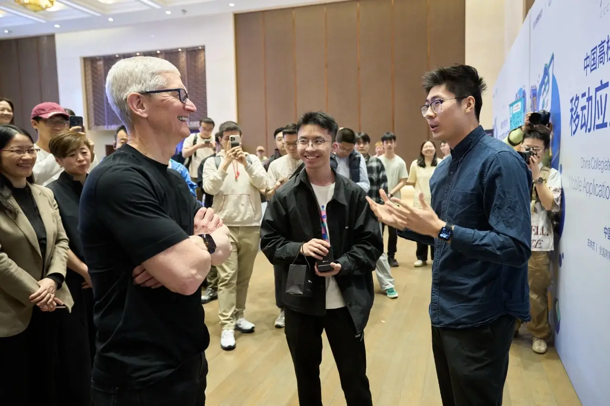
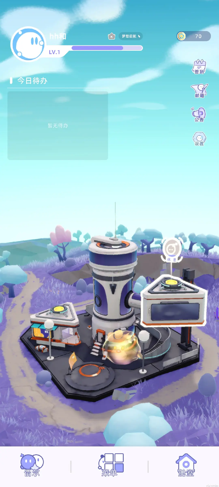
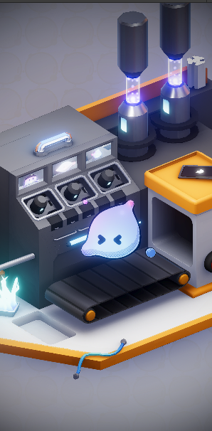
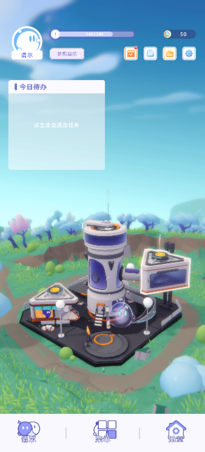
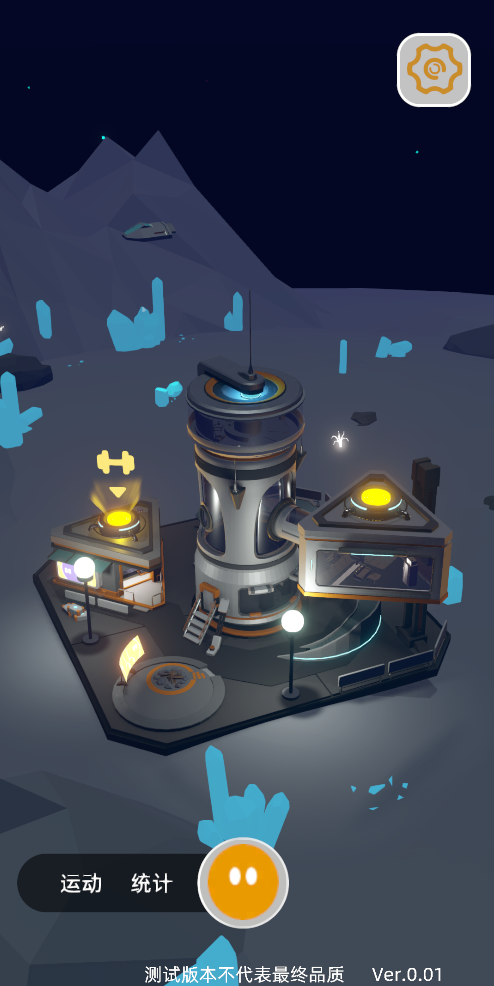

01 Cover
古法编程手搓到高效AI迭代
从手搓时代走过来，我们看到太多因为想象力而诞生的产品，如何与AI一起实现更高效稳健的产品设计与开发。
国一之后
苹果赛国一，继续打造高沉浸游戏化习惯养成产品
71 万次
个人抖音多个小游戏累计启动次数
Skills 干货
AI UI 素材工作流，视频转文档，
官网 / 下载入口
主题：游戏化产品 + Unity 渲染 + AI Agent 工作流

真实产品落地 + 真实分享场景。不是概念片，而是一路做出来、复用出去、沉淀成方法论的项目。

最终版本的异星球主界面
这场分享会会讲什么
- 怎样从零手搓出一个“有生命感”的虚拟伙伴
- 打造可复用的组件库
- 怎样在 AI Agent 时代把原本慢的流程做快做好
- 怎样把知识库、素材库、网站都接进个人工作流
01 / 07
02 Character
角色 · 程序 · 特效：
从零手搓一个虚拟伙伴
核心理念：独一无二，情感映射，融球。
这一版最关键的不是“功能多”
- 用户运动时，谓尔在跑步机上同步奔跑，行为和人同步。
- 到了夜晚自动睡觉，打扰它会有明显反馈，世界开始具备节律。
- 角色表现、程序控制与特效响应统一到一个情感目标：让用户感知到它“在这里生活”。
同步行为
跑步、休息等动作跟随用户状态变化
昼夜节律
不是 UI 定时器，而是世界规则的一部分
生命感
角色行为成为游戏化习惯养成的反馈媒介

第一版伪 3D 角色

角色与世界真正耦合后的主界面
运动时同步奔跑：角色动作变成用户习惯反馈
夜晚自动入睡：世界规则开始具备“生命感”
虚拟伙伴的“生命感”来自程序规则而不只是美术素材
02 / 07
03 World
场景渲染：24 小时实时动态光照的异星球
让场景跟随现实时间流动，塑造一个真正“活着”的世界。
从产品体验看，这是世界观；从技术视角看，这是可复用渲染系统
- 时间不只影响天空颜色，而是整体气氛、生活感与陪伴感。
- 最终把天气与光照系统抽离成独立 Unity 插件，为后续多个项目复用铺垫。
- 这种复用不是“复制代码”，而是把项目里最值钱的经验抽成工具。

最初的场景：可用，但世界感还不够强
最终场景：色彩、空气感、层次全部拉起来
Dynamic Stylized Sky：24 小时天气系统最终独立成 Unity 插件，后续项目直接复用。
好的世界渲染系统，本质上是在持续放大产品叙事
03 / 07
04 Iterate
抖音造世界：AI Agent 时代的高效迭代
谓尔
→ 源式的试炼之路
→ 冰火搭子之冰城干杯
→ 冰火搭子之寻找年兽
→ 小火人学院的宝藏（建筑风格参考某大学）
核心不是做“大而全”
- 一轮一轮地快速验证玩法，把能复用的框架与渲染能力持续带到下一个项目。
- 《冰火搭子之冰城干杯》拿到二期 UGC 大赛合作游戏赛道大奖、媒体传播奖。
- 开发重心从“单项目交付”逐渐转向“系统化提速”。
评奖链接： vcreate.douyin.com
玩法快速起盘
先做出“能验证”的核心体验，再谈扩展。
渲染资产复用
天空、光照、气氛系统被连续带入新项目。
框架迭代
从官方项目到自有项目，MVC 与工具链逐步稳定。
奖项验证
传播与产品效果获得外部认可，不只是自嗨。
规模化提效
为 AI Agent 时代的工作流埋下了接口。
更快不是乱做，而是把每次试错都沉淀成下一次的起点
04 / 07
05 AI Skills
独家原创 AI 技能放送
ui-cutout-splitter
UI 素材自动抠图分割技能
图像 icon 制作大杀器，产能提升 200%。适合把 AI 生成的大图迅速变成真正可落地的 UI 原子素材。
生成绿幕 UI 素材
算法自动抠图
根据空像素自动裁切
输出可直接进项目的原子化素材
eagle-library-skill
Eagle 素材管理
Eagle 本身不给 AI 一个现成 CLI，但 AI 可以直接读文件夹、接工作流，自动整理和管理大量 AIGC 资产。
与抠图工作流串联
自动归档、分类、可追溯
让“生成素材”变成“资产生产线”
video-to-wiki-lesson
视频课程转 Obsidian LLM Wiki
把视频课程逐节转成图文并茂的 Obsidian Wiki 笔记，覆盖字幕处理、关键帧截图、Section 级文章编写，以及摘要、测验、词汇表等学习资料生成。
读取字幕或 Whisper STT 转录
提取关键时间点并批量截图
按 Section 组织图文文章
从字幕提炼知识点与学习资料
把重复素材劳动、素材管理和课程知识整理一起交给 AI 与脚本，人类把精力留给判断、筛选和最终审美。
AI 技能的终点不是炫技，而是把个人工作流升级成可复用产线
05 / 07
06 Knowledge
Obsidian 知识库、飞书与个人网站
推荐资源
这页想表达的不是工具名，而是方法
- 项目经验要能回流进知识库，否则下次还会从零开始。
- 知识库要能对外表达成网站，否则个人品牌难以积累。
- 文档系统要能被 AI 读写，否则只是更漂亮的手工录入界面。
一个更完整的个人闭环
- Obsidian 负责沉淀思考和知识结构。
- 飞书负责对外协作、发布和表格化执行。
- 个人网站负责把内部积累转成外部可见的作品与品牌。
把知识、文档、网站打通之后，个人效率会呈现平台化增长
06 / 07
07 Closing
总结：从单个项目，到一套可持续放大的个人系统
- 前期靠古法手搓，把角色、场景、玩法一个个做实。
- 中期把渲染、架构、数值和工具慢慢抽成能复用的模块。
- 现在进入 AI Agent 时代，真正拉开差距的是谁先把这些模块接成工作流。
项目经验
不是停在 PPT，而是持续变成可复用的系统资产
AI 能力
不是会聊天，而是会稳定地产出真实业务价值
个人品牌
知识库、网站、工作流会共同构成你的护城河
最终输出不只是一份分享，而是可继续扩展的作品集表达方式。
愿景、实现、迭代、工具链，最后都回到一个问题：你有没有把自己的方法沉淀下来。
谢谢观看
07 / 07